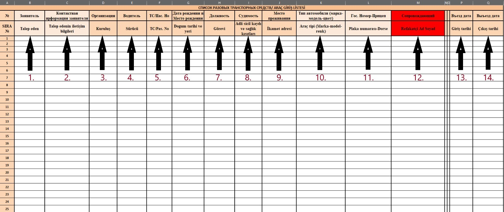

Akkuyu Nükleer Güç Santrali sahasına günübirlik giriş-çıkış yapacak malzemeler için, tek seferlik araç taleplerinde aşağıdaki adımlar izlenmelidir:
1. Talep edilen belgeler, mailin konu kısmına “Tek Seferlik Araç İzni” yazılarak gönderilmelidir. Konuda ayrıca listedeki ilk personelin adı, soyadı ve araç
sayısı belirtilmelidir. (Örneğin: 6 KİŞİ - TEK SEFERLİK ARAÇ - ERDOĞAN YÜCEOĞLU - 33 ABC 123).
2. E-postaya, "Tek Seferlik Araç İzni" Excel formu ve aracın plakası ile isimlendirilmiş ruhsat dosyası eklenmelidir.
3. Bu belgeler Tuğba Yay'a tugba.yay@t2ic.com gönderilmelidir.
ÖNEMLİ: Araç Girişi Örnek Excel Formundaki bilgilerin kimlik, ehliyet, pasaport ve ruhsattaki bilgilerle teyit edilerek
eksiksiz ve büyük harflerle doldurulması gerekmektedir.
ÖNEMLİ: Acil Tır Durumu: Acil giriş yapan bir tır, malzemeyi indiremediği durumda saha içinde kalabilir; ancak şoför saha
içinde kalamaz ve ertesi gün tekrardan giriş yapabilir.
Alan Doldurma Talimatları:
1. Talep Eden: Talebi gerçekleştiren personelin Adı ve Soyadı belirtilmelidir.
2. Talep Eden İletişim Bilgileri: Personelin cep telefon numarası yazılmalıdır.
3. Kuruluş: Firma isimleri İngilizce karakterlerle belirtilmelidir (Ör: TSM ENERJI/USTA EL).
4. Sürücü: Aracı kullanacak personelin Ad ve Soyadı yazılmalıdır.
5. TC/Pasaport: Sürücünün TC Kimlik veya Pasaport bilgisi eklenmelidir.
6. Doğum Tarihi ve Yeri: Sürücünün doğum tarihi gün, ay ve yıl olarak belirtilmelidir (Ör: ERZURUM 02.01.1998).
7. Görevi: Sürücünün görev bilgisi doldurulmalıdır.
8. Adli Sicil Kaydı ve Sağlık Kısıtları: Sürücünün adli sicil kaydı ve sağlık durumu hakkında bilgi verilmelidir.
9. İkamet Adresi: Personelin mevcut ikamet adresi belirtilmelidir.
10. Araç Tipi (Marka-Model-Renk): Araç tipi, marka, model ve renk olarak yazılmalıdır (Ör: SCANIA R500 N323 ÇEKİCİ (BEYAZ)).
11. Plaka Numarası-Dorse: Dorseli araçlarda plaka bilgisi çekici-dorse şeklinde yazılmalıdır (Ör: 42 YN 999-42 YR 008).
12. Refakatçi Ad Soyad: Sürücünün personel kartı yoksa saha içinde eşlik edecek refakatçinin Ad ve Soyadı belirtilmelidir.
13. Giriş Tarihi: Aracın saha içine giriş yapacağı tarih eklenmelidir.
14. Çıkış Tarihi: Aracın saha içinden çıkış yapacağı tarih belirtilmelidir.

Akkuyu Nükleer Güç Sahası Araç Giriş Talimatları ve Gereklilikler
Önemli Bilgilendirme
• Otomobil, hafif ticari araç ve kamyonet şoförleri için vizitör izni veya Akkuyu Geçici Giriş Kartı bulundurma zorunluluğu vardır.
• Tır ve kamyon şoförleri için bu zorunluluk bulunmamaktadır; ancak tır ve kamyon şoförleri Akkuyu NGS sahasına yalnızca en fazla 2 gün
için vizitör kartı ile giriş yapabilir. Sahaya daha fazla giriş yapmaları gerekiyorsa, Bakanlık izin evrakları hazırlanarak başvuruda bulunulması gerekmektedir.
NOT: Araç giriş talepleri en fazla 2 gün ve toplamda 5 güne kadar yapılabilir. İşverenin talimatları doğrultusunda bu süre değişiklik gösterebilir.
NOT: Araç giriş tarihinden en az 1 iş günü öncesinde taleplerin iletilmesine dikkat edilmelidir.
Başvuru için Gerekli Belgeler:
1. Araç Ruhsatı: Ruhsatın net okunur taraması veya fotoğrafı gereklidir. Dorseli araçlarda çekici ve dorse ruhsatları araç plakasıyla isimlendirilmelidir.
• Örnek: 42 YN 999-42 YR 008
2. Sürücü Belge ve Kimlikleri:
• Sürücü ehliyeti, kimlik veya pasaportun okunaklı taraması veya fotoğrafı.
• Bu belgeler, sürücü adı-soyadı ve belge türü (ehliyet, kimlik veya pasaport) ile isimlendirilmelidir.
• Örnek: HASAN YILMAZ EHLİYET
3. Dosya Düzenlemesi:
• Yukarıdaki belgeler, sürücü adı-soyadı ile açılan bir klasörde toplanarak ZIP dosyası haline getirilmelidir.
• Örnek: HASAN YILMAZ.zip
ÖNEMLİ: Mailde, araç sürücüsünün Akkuyu NGS'ye giriş izni olup olmadığı mutlaka belirtilmelidir.
Evrak Teslimi ve E-posta Gönderimi
• Evraklar mail yoluyla gönderilmelidir.
• E-posta hazırlanırken konu kısmına Tek Seferlik Araç İzni yazılmalı, ayrıca listedeki ilk personelin adı, soyadı ve araç sayısı eklenmelidir.
• Örnek: 6 KİŞİ - TEK SEFERLİK ARAÇ - ERDOĞAN YÜCEOĞLU - 33 ABC 123
• E-postaya, Tek Seferlik Araç İzni Excel formu ve plaka ile isimlendirilmiş ruhsat dosyası eklenmelidir.
Yukarıdaki aşamaları dikkate alarak ve ekli araç talep örnek formatını kullanarak araç taleplerinizi tamamlayabilirsiniz.